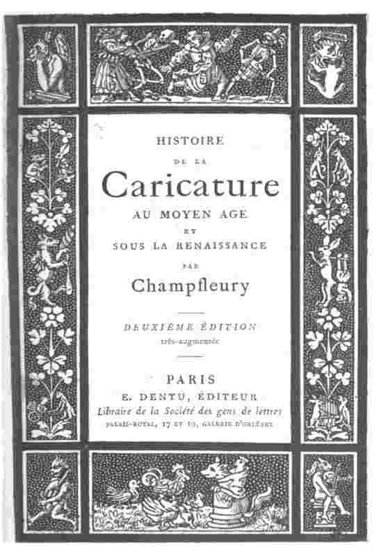

À dire vrai, j’aurais mauvaise grâce à me plaindre du manque de sympathie des esprits sérieux pour cette série commencée déjà depuis longtemps; cependant il est bon de répondre à un honorable membre de l’Université, ému de l’attentat contre le Beau que, selon lui, je commettais en étudiant de près l’art satirique chez les anciens. Préoccupé des manifestations dans le même sens exprimées plus nettement au moyen âge et s’ingéniant en diverses raisons pour me dissuader de donner suite à mes recherches, il disait, plein de mélancolie :
« Sans contester à l’art gothique le mérite de son architecture, convient-il d’admirer autant qu’on l’a fait des bas-reliefs grotesques ?... Est-ce par là que nos cathédrales ont chance d’être avec succès opposées au Parthénon ?... Et sont-ce des spectacles bien agréables à l’œil, bien divertissants pour l’esprit que des caricatures en pierre[1] ? »
Chassang, la Caricature et le grotesque dans l'art grec. (Revue contemporaine, 1865.)
Le critique qui posait ces questions timorées ne me semble pas avoir une idée bien nette du but et des résultats de l’archéologie. Personne n’a jamais « admiré » démesurément les bas-reliefs satiriques des cathédrales. Il s’agit d’en scruter le sens, de le pénétrer et d’ajouter quelques pages utiles à l’histoire des siècles antérieurs. Que vient faire le « Parthénon » en regard des figures satiriques des monuments religieux ? Existe-t-il un écolier assez naïf pour opposer Phidias à d’humbles sculpteurs qui n’avaient pour règle qu’une symbolique confuse, pour gouverne que les caprices de leur imagination ? Qui a présenté ces spectacles comme « agréables à l’œil et divertissants pour l’esprit ? » Il est réellement trop facile de combattre le spiritualisme effarouché qui se fait jour à travers les plaintes de l’honorable universitaire.
«Ce qui arrête et fixe trop nettement les formes, ajoute-t-il, n'est pas propre à l'expression du ridicule, car les arts plastiques vivent de beauté et l'expression des ridicules est un commencement de laideur. La véritable place du grotesque n'est donc pas dans les œuvres de la sculpture et de la peinture, mais dans les rapides dessins d'un spirituel et malin crayon.» De nos jours, où la caricature est exclusivement cantonnée dans les petits journaux, je n'ai pas encore rencontré d'architecte appelé à bâtir une église moderne qui ornementât la façade et les chapiteaux de magots et de figures bouffonnes. L'art, tel que l'étudient les archéologues, n'a rien à voir avec le contrôle des esthéticiens. Les manifestations du Beau sont étudiées, mais avec la même balance qui pèse le Laid. L'archéologue n'enseigne pas, il constate. La sérénité, la pureté des lignes dans les œuvres d'art lui semblent sans doute préférables à l'expression du grotesque; il n'en recueille pas moins précieusement ces formes grimaçantes qui donnent peut-être une idée plus exacte et plus vive des mœurs, des coutumes et des usages du passé, qu'un pur et noble contour.